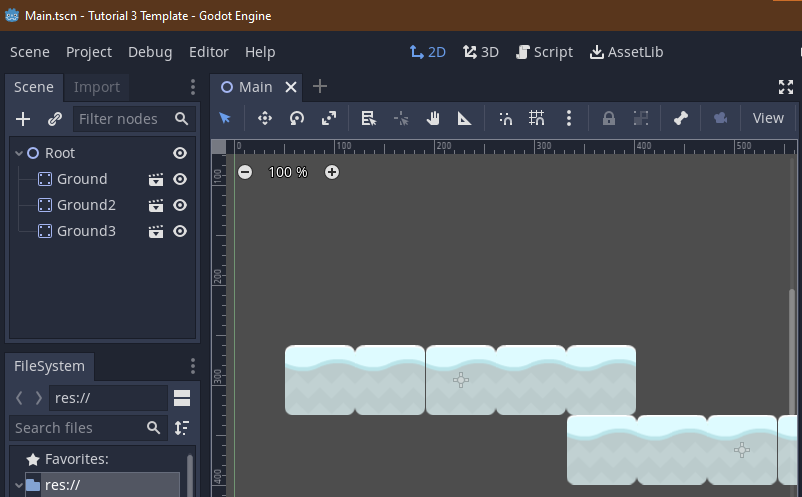
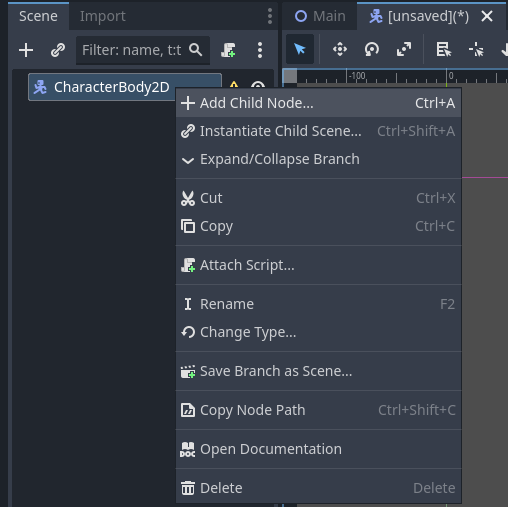
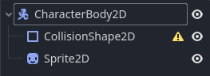
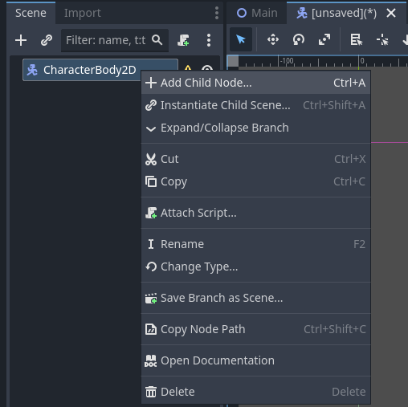
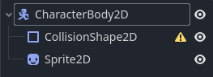

Tutorial 3 - Introduction to Game Programming with GDScript for Implementing Basic 2D Game Mechanics
Selamat datang pada tutorial ketiga mata kuliah Game Development. Pada tutorial kali ini, kamu akan mempelajari sintaks bahasa utama engine Godot, yaitu GDScript, beserta penggunaannya dalam konsep node dan object pada engine Godot. Di akhir tutorial ini, diharapkan kamu paham dengan penggunaan GDScript dan dapat menerapkannya untuk mengimplementasikan mekanik dasar permainan 2D platformer.
Daftar Isi
- Tutorial 3 - Introduction to Game Programming with GDScript for Implementing Basic 2D Game Mechanics
- Daftar Isi
- Pengantar
- Basic 2D Plane Movement
- Latihan Mandiri: Eksplorasi Mekanika Pergerakan
- Skema Penilaian
- Pengumpulan
- Referensi
Pengantar
Is Scripting an Instrument?
Pekan lalu kita telah mencoba membuat objek sederhana sebagai scene yang terdiri dari komposisi satu atau lebih node. Objek di dalam permainan bisa saja berupa objek statik yang tidak memiliki peran apapun di dalam permainan, seperti menjadi hiasan atau rintangan. Namun pada umumnya, kita membutuhkan objek yang memiliki peran dan dapat berinteraksi dengan objek lainnya di dalam sistem permainan. Peran dan interaksi antar objek di dalam sistem permainan serta hubungannya dengan interaksi pemain dapat didefinisikan menggunakan pemrograman berbasis scripting.
Pemrograman menggunakan script biasanya mengacu pada penggunaan bahasa pemrograman yang langsung dijalankan (atau, diinterpretasikan) oleh sebuah runtime. Contoh pemrograman menggunakan script yang terkenal antara lain adalah bahasa Python dan JavaScript. Jika kamu masih ingat pengalaman belajar bahasa Python di kuliah pemrograman dasar, maka kamu pasti ingat bahwa Python tidak membutuhkan compiler apapun. Program Python dapat langsung berjalan tanpa melalui proses kompilasi terlebih dahulu. Contoh lain bahasa script adalah JavaScript. Kode JavaScript akan dijalankan oleh runtime seperti engine JavaScript di dalam browser atau runtime khusus untuk menjalankan kode JavaScript di luar browser seperti Node atau Deno.
Engine Godot versi 3 mendukung empat (4) bahasa pemrograman: GDScript, Visual Script, C#, dan C++. Pada mata kuliah Game Development ini, kamu akan belajar sintaks dan cara penggunaan bahasa GDScript. Beberapa alasan mengapa GDScript dipilih sebagai bahasa pemrograman utama adalah:
- Integrasi penuh dengan engine Godot dan komponen editornya.
- Sederhana dan cepat.
- Sintaks yang mirip dengan bahasa scripting populer lainnya seperti Python dan Lua.
Catatan: bagi pembaca yang sudah berpengalaman menggunakan bahasa C# dan engine Unity, sebenarnya Godot juga menyediakan varian engine yang menerima bahasa C#. Dukungannya juga sudah relatif stabil di versi Godot terkini. Namun untuk keperluan pembelajaran bagi seluruh peserta kuliah, kita akan fokus menggunakan bahasa GDScript selama satu semester ini.
GDScript Example
Contoh sebuah script yang dituliskan dalam GDScript adalah berikut:
1 2 3 4 5 6 7 8 9 10 11 12 13 14 15 16 17 18 19 20 21 22 23 24 25 26 27 28 29 30 31 32 33 34 35 36 37 38 39 40 41 42 43 44 45 46 47 48 49 50 51 52 53 54 55 56 57 58 59 60 61 62 63 64 65 66 67 68 69 70 71 72 73 74 | |
Catatan: contoh di atas diambil dari dokumentasi resmi Godot berikut: https://docs.godotengine.org/en/3.5/tutorials/scripting/gdscript/gdscript_basics.html
Beberapa hal yang perlu kita bahas:
- Bahasa GDScript memiliki paradigma object-oriented (OO) dan imperative.
Sebuah script akan memiliki hubungan inheritance ke sebuah superclass.
Jika tidak mendeklarasikan inheritance secara eksplisit, maka sebuah class di GDScript secara implisit merupakan turunan dari sebuah root superclass bernama
Object. - Bahasa GDScript memiliki type system yang bersifat dynamic. Kamu bisa mendeklarasikan variabel ataupun fungsi tanpa tipe data. Namun sangat disarankan untuk secara eksplisit tetap mendeklarasikan tipe data pada variabel dan fungsi. Tujuannya untuk membantu autocompletion dan dokumentasi yang disediakan oleh editor.
- Standar penulisan GDScript menyerupai Python. Misalnya, blok kode dibedakan menggunakan indent.
Untuk lebih lengkapnya, silakan merujuk ke dokumen GDScript style guide.
Untuk mempermudah konsistensi penulisan kode di lingkungan pengembangan, kamu dapat merujuk ke berkas
.editorconfigyang tersedia di template Tutorial 3 serta memanfaatkan program Python bernamagdtoolkityang menyediakan linter dan code formatter GDScript.
Basic 2D Plane Movement
Pada tutorial ini, kita akan mengimplementasikan mekanika dasar sebuah permainan berjenis (genre) platformer. Pemain akan dapat menggerakkan sebuah objek ke kiri dan ke kanan serta melompat. Tutorial ini akan mendemonstrasikan:
- Membuat sebuah objek
Kinematic2Ddengan child nodeCollision2DdanSprite. - Membuat script dan memasangkan script tersebut ke objek di dalam permainan.
- Implementasi physics dasar.
Setting Things Up
Mulai tutorial ini dengan membuat salinan repositori Git template proyek Tutorial 3. Buka laman GitHub repositori Git template proyek Tutorial 3, lalu klik "Use this template" untuk membuat salinan repositori Git tersebut ke dalam akun GitHub pribadi. Selanjutnya, clone repositori template proyek Tutorial 3 dari akun GitHub milikmu ke lingkungan pengembangan lokal. Kemudian buka proyeknya menggunakan Godot.
Setelah berhasil membuka proyeknya menggunakan Godot, buka folder scenes dan buka scene Main.tscn.
Di dalam mode workspace 2D, kamu dapat melihat ada ground atau landasan yang melayang di dalam scene.
Kita akan menaruh objek yang dapat bergerak disana.

Buat scene baru dan tambahkan root node Kinematic2D pada scene tersebut.
Ubah nama node tersebut menjadi Player.
Tambahkan child node Sprite dan CollisionShape2D dengan menggunakan menu Add Child Node.

 



Pilih node CollisionShape2D dan buka panel Inspector. Tambahkan Shape pada node tersebut dengan memilih new RectangleShape2D.

Pilih node Sprite dan buka panel Inspector. Pada menu texture, pilih menu Load dan buka folder Assets, kemudian pilih salah satu dari sprite pesawat yang ada.

Save Scene tersebut dalam folder Scenes. Objek ini akan menjadi target scripting.
Catatan: Nama node, scene, dan pilihan sprite dibebaskan. Kamu diperbolehkan untuk menggunakan aset milik sendiri.
Tampilan Godot Editor terdiri dari beberapa panel yang akan dijelaskan pada subbab berikutnya.
Making a Script
Pada panel Scene, klik kanan pada node Player. Pilih Attach Script pada menu yang muncul. Akan muncul dialog untuk membuat script. Akan ada beberapa pilihan yang tersedia, diantaranya nama script, bahasa script, dll.
Karena script akan dipasang pada KinematicBody2D, script otomatis meng-inherit class tersebut. Pada dasarnya, ini adalah skema dari GDScript, karena kita ingin menambahkan fungsionalitas baru pada node yang kita inginkan.
Ubah nama script menjadi Player.gd kemudian simpan script pada folder scenes.

Script akan otomatis terbuka pada Godot Editor. Setiap script yang dibuat akan diberikan template:

Terdapat dua fungsi dasar yang hampir selalu ada pada bermacam-macam script: _ready() dan _process(). Fungsi _ready() akan selalu dipanggil ketika sebuah node menjadi aktif pada sebuah scene.
Fungsi _process(delta) akan dipanggil berkala pada setiap frame update.
Catatan: Game Engine memroses banyak frame dalam satu detik. Tergantung hardware, rata-rata komputer memiliki kecepatan proses 60 frames per second (fps). Artinya, dalam satu detik fungsi
_process(delta)dipanggil 60 kali. Bagi yang sudah mengenal engine Unity dan/atau Unreal, kedua fungsi ini memiliki fungsi yang sama denganAwake()/Start()danUpdate().
Latihan: Implementasi Pergerakan Horizontal Menggunakan Script
Sebuah script jika dipasang ke suatu node akan memberikan node tersebut atribut tambahan. Script dapat digunakan untuk mengendalikan node tersebut dan semua child node yang ada.
Tujuan kita adalah menggerakan node Player secara horizontal. Tambahkan cuplikan kode ini pada Player.gd:
1 2 3 4 5 6 7 8 9 10 11 12 13 14 15 16 | |
Jika kamu sedang mengambil atau pernah mengambil mata kuliah aljabar linier, maka kamu akan melihat salah satu manfaat dari ilmu yang dipelajari dari mata kuliah tersebut.
Objek di dalam "dunia" permainan akan memiliki tiga buah komponen utama untuk merepresentasikan wujud objek di dalam permainan. Tiga komponen tersebut adalah: posisi, rotasi, dan skala. Dalam bahasa Inggris, ketiga komponen tersebut biasa disebut sebagai position, rotation, dan scale. Ketiga komponen tersebut biasa direpresentasikan secara internal sebagai struktur vektor (game 2D) dan matriks (game 3D). Sehingga apabila kita akan menyimulasikan interaksi antar objek seperti pergerakan objek di dalam dunia permainan, maka kita akan menggunakan operasi-operasi di aljabar linier untuk dapat memanipulasi objek tersebut. Namun jangan khawatir, bukan berarti kamu harus mengimplementasikan struktur data dan operasi manipulasi vektor dari nol. Game engine biasanya sudah menyertakan fungsi-fungsi terkait manipulasi objek di standard library.
Mari mulai dengan contoh sederhana di tutorial ini, yaitu menggerakkan objek. Perhatikan hal-hal berikut:
export (int) var speed = 400merupakan deklarasi variabel. Export membuat variabel speed dapat diakses lewat visual editor.var velocity = Vector2()adalah deklarasi private variable Vector2. Vector2 adalah tipe data Vector built-in Godot yang memiliki dua arah (x,y).get_input()adalah wrapper function untuk membaca input kemudian menambahkan velocity (kecepatan) pada Player.Input.is_action_pressed(String signal)merupakan fungsi bawaan Godot yang membaca input._physics_processs(delta)dipanggil secara berkala untuk membaca input.move_and_slide(Vector2 vector)merupakan fungsi KinematicBody2D. Ketika fungsi ini dipanggil, KinematicBody2D akan bergerak sebanyak input Vector2.
Catatan: _physics_process(delta) tidak jauh berbeda dari _process(delta). Fungsi ini dipanggil secara berkala, namun memiliki waktu panggil yang konstan tanpa bergantung pada fps.
Jalankan scene dan gunakan tombol panah arah. Player dapat bergerak secara horizontal.
Latihan: Implementasi Physics Sederhana (Gravitasi dan Loncat)
Jika dilihat, Player hanya bergerak horizontal dan tidak dipengaruhi gravitasi. Objek Player tetap diam diatas meskipun tidak berada pada suatu pijakan.
Hal ini merupakan karakteristik dari KinematicBody2D, dimana node tidak dipengaruhi oleh physics yang tersedia dari game engine.
Sedangkan untuk dapat membuat objek terpentaruh physics, maka seharusnya objek tersebut menggunakan node lain bertipe RigidBody2D.
Salah satu alasan mengapa kita tidak memakai RigidBody2D yang dapat dipengaruhi physics Game Engine adalah konsistensi. Dengan memakai KinematicBody2D, objek yang digerakan oleh pemain akan selalu merespon terhadap input yang diberikan, dimana objek RigidBody2D akan mudah terpengaruh oleh physics diluar kendali pemain.
Apabila kita ingin membuat Player kita melompat, maka kita harus bisa membuat Player dipengaruhi gravitasi. Setidaknya, Player harus bisa jatuh. Untuk itu, kita harus menambahkan fungsi physics sendiri, karena kita tidak bisa menggunakan gravitasi Game Engine. Tambahkan baris berikut pada Player.gd:
1 2 3 4 5 6 7 8 9 10 11 12 13 14 15 16 17 18 19 20 | |
Beberapa hal yang ditambahkan:
- Variabel
GRAVITYsebagai angka arbitrer. - Konstanta
UPmerupakan shorthand untuk Vector2 yang mengarah keatas. Pada Godot Engine, koordinat y negatif mengarah keatas. velocity.x = 0memastikan bahwa Player akan berhenti apabila tidak ada tombol yang ditekan.velocity.y += delta * GRAVITYmerupakan fungsi gravitasi untuk Player. Setiap diproses,velocity.yPlayer ditambahkan sejumlah konstanta gravitasi (mengarah kebawah).
Jalankan scene. Objek Player akan jatuh.

Sekarang Player kita butuh sebuah pijakan. Buka Scene Main.tscn. Tambahkan Scene (objek) Player pada scene main, kemudian jalankan scene. Player akan jatuh, namun berhenti ketika menyentuh tanah. Ketika di tanah, Player masih dapat bergerak secara horizontal.

Apabila kita ingin Player melompat, salah satu cara yang bisa digunakan adalah mengubah velocity.y menjadi negatif. Tambahkan cuplikan kode pada Player.gd:
1 2 3 4 5 6 7 8 9 10 11 12 13 14 15 16 | |
Perhatikan bahwa:
is_on_floor()merupakan fungsi bawaan KinematicBody2D dimana node akan mengecek otomatis apabila Collider yang sedang bersentuhan merupakan floor atau bukan.Input.is_action_just_pressed('up')merupakan fungsi input Godot Engine yang mengecek input pertama dari sebuah tombol.
Jalankan Scene. Player sekarang bisa melompat.
Selamat, kamu telah menyelesaikan tutorial ini!

Latihan Mandiri: Eksplorasi Mekanika Pergerakan
Sebagai bagian dari latihan mandiri, kamu diminta untuk praktik mengembangkan lebih lanjut mekanika pergerakan karakter di game platformer. Beberapa ide fitur lanjutan terkait pergerakan karakter di game platformer:
- Double jump - karakter pemain bisa melakukan aksi loncat sebanyak dua kali.
- Dashing - karakter pemain dapat bergerak lebih cepat dari kecepatan biasa secara sementara ketika pemain menekan tombol arah sebanyak dua kali.
- Crouching - karakter pemain dapat jongkok dimana sprite-nya terlihat lebih kecil (misal: sprite karakter manusianya terlihat berjongkok) dan kecepatan pergerakannya menjadi lebih lambat ketika lagi jongkok
- Dan lain-lain. Silakan cari contoh mekanika pergerakan 2D lainnya yang mungkin diimplementasikan di dalam permainan tipe platformer.
Silakan pilih fitur lanjutan yang ingin dikerjakan.
Kemudian jelaskan proses pengerjaannya di dalam sebuah dokumen teks README.md.
Cantumkan juga referensi-referensi yang digunakan sebagai acuan ketika menjelaskan proses implementasi.
Skema Penilaian
Pada tutorial ini, ada empat kriteria nilai yang bisa diperoleh:
- 4 (A) apabila kamu mengerjakan tutorial dan latihan melebihi dari ekspektasi tim pengajar. Nilai ini dapat dicapai apabila mengerjakan seluruh Latihan dan Latihan Mandiri, ditambah dengan memoles (polishing) lebih lanjut permainannya. Misal, salah satu ide polishing sederhana yang dapat dikerjakan adalah memperbaiki sprite karakter sehingga tampilannya sesuai dengan arah jalannya karakter. Ketika karakter jalan ke kiri, maka wajah dan badan di sprite karakter juga menghadap ke kiri. Begitu pula sebaliknya. Akan lebih baik lagi jika bisa mengimplementasikan animasi pada sprite, namun kamu perlu mengeksplorasi materi yang belum dibahas di tutorial ini.
- 3 (B) apabila kamu hanya mengerjakan tutorial dan latihan sesuai dengan instruksi. Nilai ini dapat dicapai apabila mengerjakan seluruh Latihan dan Latihan Mandiri.
- 2 (C) apabila kamu hanya mengerjakan tutorial hingga tuntas. Nilai ini dapat dicapai apabila mengerjakan seluruh Latihan namun tidak mengerjakan Latihan Mandiri.
- 1 (D) apabila kamu hanya sekedar memulai tutorial dan belum tuntas.
- 0 (E) apabila kamu tidak mengerjakan apapun atau tidak mengumpulkan.
Pengumpulan
Kumpulkan semua berkas pengerjaan tutorial dan latihan ke dalam Git dan push ke repositori Git pengerjaan tutorial 3. Apabila kamu mengerjakan latihan mandiri, pastikan scene dan node sudah tercatat masuk ke dalam repositori Git. Kemudian, kumpulkan tautan ke repositori Git hasil pengerjaan tutorial 3 kamu di slot pengumpulan yang tersedia di SCELE.
Tenggat waktu pengumpulan adalah 28 Februari 2024 pukul 21:00.
Referensi
- Kinematic Character (2D)
- Scripting
- 2D Movement Overview
- Kenney Assets
- Materi tutorial pengenalan Godot Engine, kuliah Game Development semester gasal 2020/2021 Fakultas Ilmu Komputer Universitas Indonesia.
Created: 2024-02-22 02:38:22